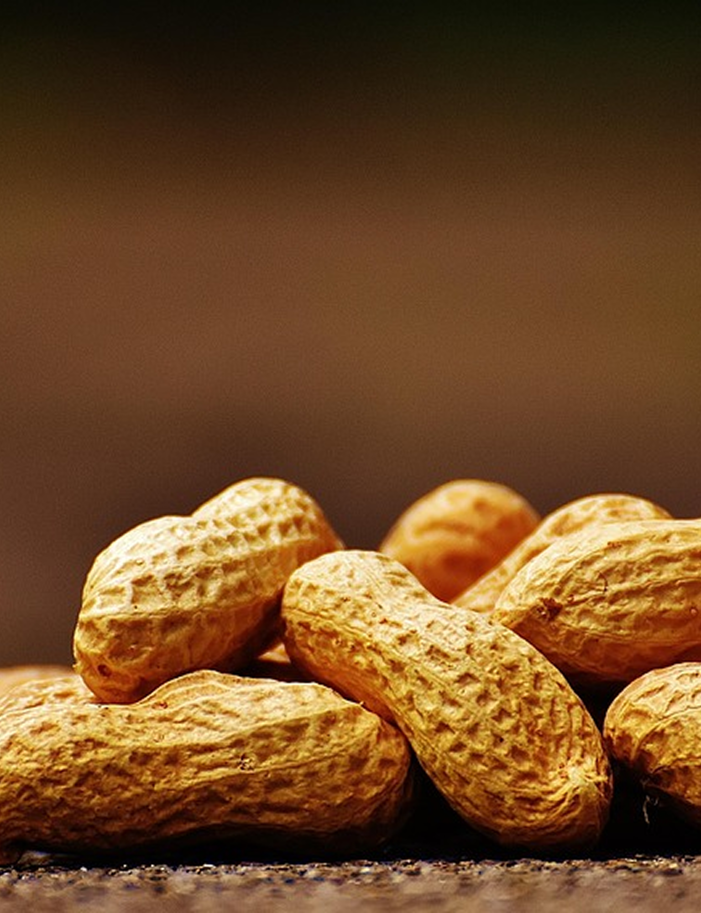

Peanuts with the sun and wind in Udo Island
in Jeju Island are the same old way.
It is carefully ground on a millstone
and contains a deep and savory flavor.
’Peanut Mak’ is a peanut premium makgeolli
that captures the purity of nature
국산 쌀, 제주 우도산 땅콩, 누룩 , 정제수
도수6도
용량750ml
맛의 특징
고소한 땅콩 풍미와 쌀 막걸리의 은은한 단맛이
조화를 이루는 기본형
청량감이 있어 가볍게 즐기기 좋은 데일리 막걸리.
국산 쌀, 제주 우도산 땅콩, 꿀, 누룩 , 정제수
도수8도
용량750ml
맛의 특징
꿀과 땅콩의 풍부한 단맛이 더해져
한층 깊고 부드러운 풍미.
특별한 날, 디저트와도 잘 어울리는 프리미엄 라인.
국산 쌀, 제주 우도산 땅콩, 누룩 , 정제수
도수10도
용량750ml
맛의 특징
오크통에서 숙성하여 고소한 땅콩향이 더해진
은은한 바닐라·스모키 향.
부드럽고 묵직한 여운이 남는 고급형 막걸리.
1. 육회용 소고기 200~300g, 소금, 후추, 다진 양파 2큰술,
다진 파 2큰술, 홀그레인 머스타드 2큰술, 계란 노른자 1개 등이 필요합니다.
2. 소고기는 키친타올로 핏기를 제거한 뒤 소금과 후추로 밑간합니다.
3. 양파, 파 등은 잘게 다져 준비합니다.
1. 다진 소고기, 다진 양파, 파, 홀그레인, 머스타드를 넣고 잘 버무립니다.
2. 밥그릇에 담아 눌러 모양을 잡고, 접시에 옮겨 담습니다.
3. 마지막에 계란 노른자를 올려 마무리합니다.
깻잎, 카펠리니면, 간장2큰술, 쯔유1/2큰술, 설탕1큰술,
화이트발사믹 1큰술, 들기름, 통깨, 김가루
1. 깻잎은 꼭지를 제거하고 돌돌말아 가늘게 썰어주세요.
2. 카펠리니 면을 삶아 소스들을 넣어주세요
3. 들기름을 넉넉하게 둘러 비벼줍니다.
4. 접시에 면을 담고, 깻잎과 통깨, 김가루를 뿌려줍니다.
1. 감자 2~3개 껍질을 벗기고 강판에 곱게 갈아줍니다.
2. 감자즙을 체에 걸러 전분이 가라앉게 두고, 윗물은 버립니다.
3. 남은 전분과 건더기, 소금 약간, 부침가루 1~2큰술을 섞어 반죽을 만듭니다.
4. 양파, 당근, 부추, 청양고추 등 채소를 다져 넣으면 풍미가 더해집니다.
1. 팬에 식용유를 넉넉히 두르고 중불로 달군 뒤, 반죽을 얇게 펴서 부칩니다.
2. 앞뒤로 노릇노릇하게 익을 때까지 2~3분씩 구워줍니다.
3. 간장, 식초, 참기름, 고춧가루를 섞은 양념장을 곁들여 먹습니다.
돼지고기 300~600g, 양파 1개, 대파 1대, 마늘 5~10개, 생강(선택),
된장 1~3큰술, 커피가루(선택), 후추, 소금, 물을 준비합니다
1. 냄비 바닥에 양파, 대파, 마늘, 생강을 깔고 돼지고기를 올립니다.
2. 된장, 커피가루, 후추, 소금, 물을 넣고 끓입니다.
3. 센 불에서 끓이다가 중약불로 줄여 30~60분간 삶습니다.
4. 삶은 고기는 식혀서 썰어 쌈채소, 김치, 새우젓 등과 곁들여 드시면 됩니다.
Korean beef tartare
Perilla oil capellini
Potato pancake
Bossam
공식사이트 바로가기
제주 본점 양조장
제주 제주시 우도면
스페셜 오크 숙성 제품은 예약 후 발송됩니다.
예약문의 : info@peanutmak.com